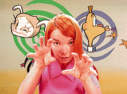

| |
Shifting uncomfortably in my seat, I fear that Ren & Stimpy creator and
Spumco President John Kricfalusi might actually make good on his threat and tear
my lips right off. Invoking the voice of everybody's favorite neurotic Chihuahua,
Kricfalusi imitates a scene from the classic episode where stupid Swedish cousin
Sven, and even stupider companion Stimpy, have smashed Ren's priceless
collection of dinosaur droppings and his jar of rare and incurable diseases.
Somehow, I've come to play Stimpy in Kricfalusi's re-enactment. His chair
knocked over, his face burning with murderous fury, Kricfalusi slams his hands down
on his desk. "You know what I'm going to do to you?!" he huffs with psychotic
pleasure. I shake my head "no," partly amused, partly terrified. "First, I'm going to
tear your lips out. Yeah, that's what I'm going to do, tear them right out. And then,
I'm going to gouge your eyes out. And you know what else? I'm going to tear your
arms right out of the sockets, and they're going to go 'pop,' just like that."
Before I can wipe away the cold bead of sweat that's glissading across my
nervous grin, Kricfalusi calms himself, almost as cartoonishly fast as he had riled
himself up. Righting his chair and sitting down once again, he explains to me in a
more even tone, "That speech was created to avoid any physical violence in that
episode of Ren & Stimpy. But as soon as we handed in the film,
[Nickelodeon] edited out, 'gouge your eyes out.' It's totally arbitrary what networks
cut. It's criminal. It ruins the art, it mutilates it."
And that's why Kricfalusi has taken his act to the Web. No
censorship of his work, no network type expurgating lines or suggesting lame jokes.
The company's Web site (www.spumco.com) promises to include all of the
dirty pictures, underwear-sniffing jokes and nipple-twisting sequences that corporate
execs would otherwise censor. "If we're sitting here laughing our guts out at a gag
we want to do, we're just going to do it and we don't care who we're going to
offend."
Kricfalusi's offbeat humor and anything-goes, anti-network disposition pervades
nearly every nook of his company, reflecting itself in the office's laid-back decor, in
the silly posting about the Kooky Spooky Yo-Yo on the communal fridge, even in the
name of the company itself, which, an employee admits in
confidence, was chosen because "it sounds like a dirty word." Whatever it is,
everyone at Spumco seems to get the same joke. At times, the off-kilter
atmosphere is all encompassing--the water-stained, wood-paneled walls of the
office space seem to bend and twist as if inked directly from Kricfalusi's pen. The
place is, in a word, loony.
At the far end of one of two long hallways, hung with animation cels and comical
staff pictorials, is Kricfalusi's office. Decorated with assorted baubles (sorry, no Log),
Flintstone Glycerine Bath Bars, framed shots of Kirk Douglas (one of Kricfalusi's
heroes) and Three Stooges puppets designed by Kricfalusi himself, the workspace
feels more informal and lounge-like than most family rec rooms. There, along with
Spumco's producer and Webmaster, Stephen Worth, Kricfalusi is describing a new
strip entitled "Baby Comes First." The story involves Spumco star Jimmy the Idiot
Boy, who, while babysitting a child, accidentally misshapes the infant's head after
pressing the child's skull's soft spot.
Exhibiting an animator's love for unusual head shapes and sizes, Kricfalusi goes
on to advise me that the best skulls for cartooning can be found at Norm's
Restaurant in Van Nuys, Calif. "No artist can imagine the heads that the Lord can
come up with. The Lord is the funniest man ever."
Eventually, after a few other digressions, including a lengthy and detailed
depiction of Tank Abbott, a frequent combatant in a pay-per-view Ultimate
Fighting show--"the last vestige of honest entertainment in the world,"
according to Kricfalusi--the two disclose the plans for the company Web site.
|

Björk's "I Miss You" video
|
Spumco.com is an ambitious project that has been in the making for the last six
months. Affecting a '50s, Ovaltine ad campaign sensibility, the site satirically dubs
itself "The Wonderful World of Cartoons." And indeed it's just that. The page doesn't
offer Captain Midnight decoder rings, nor does it provide much with regard to Ren &
Stimpy, which Spumco developed and sold to Nickelodeon in 1990. Instead, visitors
to the site will discover the company's marquee animated characters, Jimmy the
Idiot Boy, a low-IQ'd lad with hormone control problems, and George Liquor
American, an angry, commie-loathing jingoist who guest starred in several Ren
& Stimpy episodes, including the banned "Man's Best Friend." The unlikely pair,
who recently appeared in a video Kricfalusi developed for Icelandic rocker
Björk, and who were adapted to star in TV ad campaigns for Fanta Orange
Soda in Mexico, Barq's Root Beer in the United States and Aoki's Pizza in Japan,
are already emerging as hot, new animated stars. They're a ways away from
matching the explosive popularity of Spumco forerunners Ren and Stimpy, who were
originally conceived of by Kricfalusi as Jimmy's and George's pets, but the pair
already have a following among comic lovers thanks to the successful Marvel
release of Spumco Comic Book Issue #1.
The next six Jimmy and George comics will be released by Dark Horse on a bi-
monthly schedule, while a separate story involving the pair is being adapted for the
Web site.
For hardcore animation hounds, Kricfalusi is also publishing a cartoon e-zine at
the site that looks to put other industry magazines to shame. "Some guy came up
with all the opinions on animation like 40 years ago, and everybody has blindly
spouted them since then," argues Kricfalusi whose unique work has received sharp
criticism from more conservative-thinking, persnickety animators. "We offer
information about cartoons other magazines wouldn't print. We've already
interviewed all kinds of animators, classic animators like Bill Hanna and Joe
Barbera, Friz Freleng, and people in the business now like Mike Judge, the creator
of Beavis and Butt-head."
Less daffy fanatics of animation, to whom the above names mean nothing, can
choose instead to peruse the site's wealth of posted drawings, download QuickTimes
and .avi files of Spumco works, like the animated NBC peacock commissioned by
the network, or view a real-time video (served from RealVideo servers) of the
aforementioned Björk music video and Aoki Pizza commercial. Of course,
diehards can also enter the company store which offers some incredibly cool, and
some incredibly strange products, like limited-edition animation cels, painting kits
and speaking Jimmy the Idiot Boy dolls (apparently, the dolls have sold out).
Convinced that only "trustworthy" proprietors selling quality goods on the Net will
survive, Kricfalusi feels Spumco is well-positioned for the future.
Not surprisingly, Microsoft is also hoping to rope in the studio--as
content providers for the face-lifted Microsoft Network. "The people at Microsoft
have an interesting idea," says Kricfalusi. "They want a story that we already wrote
called 'Weekend Pussy Hunt.' The show won't just tell one linear story. You'll be able
to follow any of the characters. It's a pretty good idea, but I think it's too simple. I
imagine we're going to discover a lot more things to make it interactive."
Kricfalusi welcomes the "interactive" challenge, which really is not surprising; after
all, his work is some of the most free-thinking animation that's been done in years:
rebellious, innovative, nose-tweaking. But will interactive animation draw? Can it
work? Kricfalusi is the first to admit that he hasn't got the answer, but he's not
afraid to find it out, explaining that there's little to lose, except maybe time, since
the Net is such a cheap medium to work within. "That's a big factor that's gone from
entertainment, the ability to fail," says Kricfalusi, who views his online domain as an
experimental laboratory. "You're not allowed to make a mistake. In the process of
everyone guessing what is a mistake and what is not a mistake, you lose everything.
Part of getting good at anything is being able to fail."
Product testing, market surveys--it's all wasted protein according to Kricfalusi,
who has always lived by his instincts. A native Canadian, the maverick animator
moved to Los Angeles in the late '70s to pursue a career in what he insists is, "the
highest form of art ever created." Inspired by such late greats as Bob Clampett,
famed for his work on classic Bugs Bunny cartoons, and Dave and Max Fleischer
who began producing Betty Boop cartoons in the early '30s, Kricfalusi says he was
amazed by the medium's versatility, its integration of sounds, picture, rhythm,
abstract design, and of course, gags. But after working on The New Adventures
of Beany and Cecil for ABC, he realized that resuscitating the suffering art form
would mean going about it alone. "The network wanted to have Beany and Cecil
teach moral lessons. Bob Clampett cartoons teaching moral lessons? He was
always sneaking dirty jokes into his stuff. I mean, Cecil is a big pecker."
Thus Spumco was born. It wasn't long before the talented Kricfalusi was invited to
pitch original show ideas to Nickelodeon, which was looking to purchase copyrights
to new characters not based on existing toy product lines. Unwilling to part with his
darling Idiot Boy and raucous George Liquor, Kricfalusi instead developed a project
based on the two characters' pets, Ren and Stimpy.
And it was a smash hit. The show succeeded in becoming one of the most
watched shows in cable broadcasting history. Nickelodeon, realizing they had a
winner in their midst, began to meddle with Spumco's daily operation. Fights
inevitably ensued between network and creator, and in 1992, with his contract up,
Kricfalusi was shown the door. The move proved fatal for the beloved Ren &
Stimpy show, which lost Spumco's Èlan vital and, more significantly in
advertisers' minds, its viewers.
Despite the popularity of Ren & Stimpy, the three years succeeding the
unfortunate dissolution of the show found the Spumco gang falling on hard times,
keeping the company barely out of the red with the odd project here and there. The
Nickelodeon breakup left other networks wary of the "combative" Kricfalusi. In 1996,
however, the work drought came to a fortuitous end, bygones finally bygones, as
studios and licensees again began to turn to Spumco to shake up the animation
industry and act as bellwether on a number of new projects. In fact, Spumco is now
in the process of developing three 7-minute animated shorts for Hanna-Barbera,
starring Ranger Smith of Yogi Bear fame.
"As long as there is infinite choice, the people will gravitate toward better," says
Kricfalusi, making reference to the Web, the success and failure of content online,
and his studio's 180-degree about-face.
"If you're a good performer, the audience will love you and ask you for an encore.
If you're crappy, they'll boo you off stage."
With spumco.com now boasting thousands of hits a week, it appears the people
have spoken. And they're cheering, "Encore!"
|
|